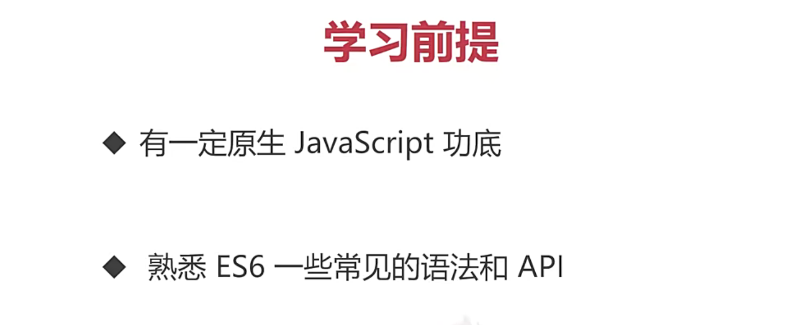
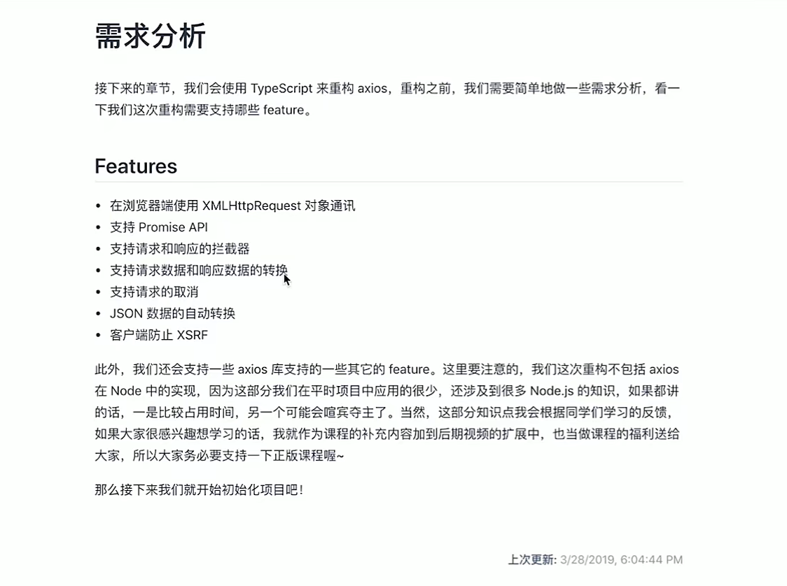
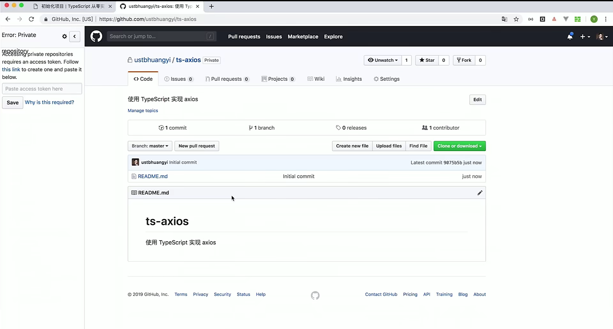

第1章 课程介绍

第2章 初识 Typescript【初次体验】
02-01 安装 TypeScript
npm i -g typescript
02-02 编写第一个 TypeScript 程序
tsc xxx.ts
node xxx.js
class User {
fullName: string
firstName: string
lastName: string
constructor(firstName: string, lastName: string) {
this.firstName = firstName
this.lastName = lastName
this.fullName = firstName + ' ' + lastName
}
}
interface Person {
firstName: string
lastName: string
}
function greeter(person: Person) {
// return 'Hello ' + person
return 'Hello ' + person.firstName + ' ' + person.lastName
}
// let user = 'Yee'
// let user = {
// let user: Person = {
// firstName: 'li',
// lastName: 'hua'
// }
let user = new User('yuan', 'shen')
console.log(greeter(user))
第3章 Typescript 类型系统【必备基础，牢固掌握】
03-01 基础类型（上）
第4章 ts-axios 项目构建【工欲善其事必先利其器】
04-01 需求分析

04-02 初始化项目 - 创建代码仓库

04-03 初始化项目 - TypeScript library starter
git clone https://github.com/alexjoverm/typescript-library-starter.git tx-axios
git clone https://gitee.com/yeomanli/typescript-library-starter.git tx-axios
cd tx-axios
npm i
04-04 初始化项目 - 关联远程分支

git pull orgin master
04-05 编写基础请求代码 - 创建入口文件
import {AxiosRequestConfig} from "./types";
function axios(config: AxiosRequestConfig) {
}
export default axios
export type Method =
'get' | 'GET' |
'delete' | 'DELETE' |
'head' | 'HEAD' |
'options' | 'OPTIONS' |
'post' | 'POST' |
'put' | 'PUT' |
'patch' | 'PATCH'
export interface AxiosRequestConfig {
url: string
method?: Method
data?: any
params?: any
}
04-06 编写基础请求代码 - 利用 XMLHttpRequest 发送请求
// xhr.ts
import {AxiosRequestConfig} from "./types";
export default function xhr(config: AxiosRequestConfig): void {
const {data = null, url, method = 'get'} = config
const request = new XMLHttpRequest()
request.open(method.toUpperCase(), url, true)
request.send(data)
}
import {AxiosRequestConfig} from "./types";
import xhr from './xhr'
function axios(config: AxiosRequestConfig): void {
xhr(config)
}
export default axios
04-07 编写基础请求代码 - demo 编写
{
"devDependencies": {
"@commitlint/cli": "7.1.2",
"@commitlint/config-conventional": "7.1.2",
"@types/jest": "24.0.13",
"@types/node": "10.11.0",
"@types/nprogress": "0.0.29",
"@types/qs": "6.5.3",
"@types/jasmine-ajax": "3.1.39",
"atob": "2.1.2",
"body-parser": "1.18.3",
"colors": "1.3.2",
"commitizen": "3.0.0",
"connect-multiparty": "2.2.0",
"cookie-parser": "1.4.4",
"coveralls": "3.0.2",
"cross-env": "5.2.0",
"css-loader": "2.1.1",
"cz-conventional-changelog": "2.1.0",
"express": "4.16.4",
"husky": "1.0.1",
"jest": "24.8.0",
"jest-config": "24.8.0",
"lint-staged": "8.0.0",
"lodash.camelcase": "4.3.0",
"nprogress": "0.2.0",
"prettier": "1.14.3",
"prompt": "1.0.0",
"qs": "6.7.0",
"replace-in-file": "3.4.2",
"rimraf": "2.6.2",
"rollup": "0.67.0",
"rollup-plugin-commonjs": "9.1.8",
"rollup-plugin-json": "3.1.0",
"rollup-plugin-node-resolve": "3.4.0",
"rollup-plugin-sourcemaps": "0.4.2",
"rollup-plugin-typescript2": "0.18.0",
"semantic-release": "15.9.16",
"shelljs": "0.8.3",
"style-loader": "0.23.1",
"travis-deploy-once": "5.0.9",
"ts-jest": "24.0.2",
"ts-loader": "5.3.3",
"ts-node": "7.0.1",
"tslint": "5.11.0",
"tslint-config-prettier": "1.15.0",
"tslint-config-standard": "8.0.1",
"tslint-loader": "3.5.4",
"typedoc": "0.12.0",
"typescript": "3.4.5",
"webpack": "4.28.4",
"webpack-dev-middleware": "3.5.0",
"webpack-hot-middleware": "2.24.3",
"jasmine-ajax": "4.0.0",
"jasmine-core": "3.4.0"
}
}
// examples/server.js
const express = require('express')
const bodyParser = require('body-parser')
const multipart = require('connect-multiparty')
const webpack = require('webpack')
const webpackDevMiddleware = require('webpack-dev-middleware')
const webpackHotMiddleware = require('webpack-hot-middleware')
const WebpackConfig = require('./webpack.config')
const path = require('path')
// require('./server2')
const app = express()
const compiler = webpack(WebpackConfig)
app.use(webpackDevMiddleware(compiler, {
publicPath: '/__build__/',
stats: {
colors: true,
chunks: false
}
}))
app.use(webpackHotMiddleware(compiler))
app.use(express.static(__dirname))
app.use(bodyParser.json())
// app.use(bodyParser.text())
app.use(bodyParser.urlencoded({extended: true}))
// app.use(cookieParser())
app.use(multipart({
uploadDir: path.resolve(__dirname, 'upload-file')
}))
const router = express.Router()
app.use(router)
registerSimpleRouter()
const port = process.env.PORT || 8080
module.exports = app.listen(port, () => {
console.log(`Server listening on http://localhost:${port}, Ctrl+C to stop`)
})
function registerSimpleRouter() {
router.get('/simple/get', function (req, res) {
res.json({
msg: `hello world`
})
})
}
// examples/webpack.config.js
const fs = require('fs')
const path = require('path')
const webpack = require('webpack')
module.exports = {
mode: 'development',
/**
* 我们会在 examples 目录下建多个子目录
* 我们会把不同章节的 demo 放到不同的子目录中
* 每个子目录的下会创建一个 app.ts
* app.ts 作为 webpack 构建的入口文件
* entries 收集了多目录个入口文件，并且每个入口还引入了一个用于热更新的文件
* entries 是一个对象，key 为目录名
*/
entry: fs.readdirSync(__dirname).reduce((entries, dir) => {
const fullDir = path.join(__dirname, dir)
const entry = path.join(fullDir, 'app.ts')
if (fs.statSync(fullDir).isDirectory() && fs.existsSync(entry)) {
entries[dir] = ['webpack-hot-middleware/client', entry]
}
return entries
}, {}),
/**
* 根据不同的目录名称，打包生成目标 js，名称和目录名一致
*/
output: {
path: path.join(__dirname, '__build__'),
filename: '[name].js',
publicPath: '/__build__/'
},
module: {
rules: [
{
test: /\.ts$/,
enforce: 'pre',
use: [
{
loader: 'tslint-loader'
}
]
},
{
test: /\.tsx?$/,
use: [
{
loader: 'ts-loader',
options: {
transpileOnly: true
}
}
]
},
{
test: /\.css$/,
use: [
'style-loader', 'css-loader'
]
}
]
},
resolve: {
extensions: ['.ts', '.tsx', '.js']
},
plugins: [
new webpack.HotModuleReplacementPlugin(),
new webpack.NoEmitOnErrorsPlugin()
]
}
<!--examples/index.html-->
<!DOCTYPE html>
<html lang="en">
<head>
<meta charset="utf-8">
<title>ts-axios examples</title>
<link rel="stylesheet" href="/global.css">
</head>
<body style="padding: 0 20px">
<h1>ts-axios examples</h1>
<ul>
<li><a href="simple">Simple</a></li>
</ul>
</body>
</html>
<!--examples/simple/index.html-->
<!DOCTYPE html>
<html lang="en">
<head>
<meta charset="utf-8">
<title>Simple example</title>
</head>
<body>
<script src="/__build__/simple.js"></script>
</body>
</html>
// app.ts
// import axios from '../../src/index'
import axios from '../../src/tx-axios'
axios({
method: 'get',
url: '/simple/get',
params: {
a: 1,
b: 2
}
})

第5章 ts-axios 基础功能实现【核心流程】
05-01 处理请求 url 参数 - 需求分析


05-02 处理请求 url 参数 - buildURL 函数实现

// src/helpers/url.ts
import {isDate, isObject} from "./util";
function encode(val: string): string {
// url编码
return encodeURIComponent(val)
// 特殊字符转换回去
.replace(/%40/g, '@')
.replace(/%3A/ig, ':')
.replace(/%24/g, '$')
.replace(/%2C/ig, ',')
.replace(/%20/g, '+')
.replace(/%5B/ig, '[')
.replace(/%5D/ig, ']')
}
export function buildURL(url: string, params?: any): string {
if (!params) {
return url
}
const parts: string[] = []
Object.keys(params).forEach((key) => {
const val = params[key]
if (val === null || typeof val === 'undefined') {
// 退出, 进入下一个key
return
}
let values = []
if (Array.isArray(val)) {
values = val
// ?xxx[]=xxx
key += '[]'
} else {
values = [val]
}
values.forEach((val) => {
if (isDate(val)) {
val = val.toISOString()
} else if (isObject(val)) {
val = JSON.stringify(val)
}
parts.push(`${encode(key)}=${encode(val)}`)
})
})
let serializedParams = parts.join('&')
if (serializedParams) {
// 不能有hash标识
const marIndex = url.indexOf('#')
if (marIndex !== -1) {
// 截去hash
url = url.slice(0, marIndex)
}
// 如果url自带?xx,就拼接&,没有就拼接?
url += (url.indexOf('?') === -1 ? '?' : '&') + serializedParams
}
return url
}
// src/helpers/util.ts
const toString = Object.prototype.toString;
/**
* 是不是日期类型
* @param val
*/
// xxx is xxx 类型保护 可以让ts推导出类型
export function isDate(val: any): val is Date {
return toString.call(val) === '[object Date]'
}
/**
* 是不是对象类型
* @param val
*/
export function isObject(val: any): val is object {
return val != null && typeof val === 'object'
}
05-03 处理请求 url 参数 - 实现 url 参数处理逻辑
// src/tx-axios.ts
import {AxiosRequestConfig} from "./types";
import xhr from './xhr'
import {buildURL} from "./helpers/url";
function axios(config: AxiosRequestConfig): void {
processConfig(config)
xhr(config)
}
function processConfig(config: AxiosRequestConfig): void {
config.url = transformURL(config)
}
function transformURL(config: AxiosRequestConfig): string {
const {url, params} = config
return buildURL(url, params)
}
export default axios